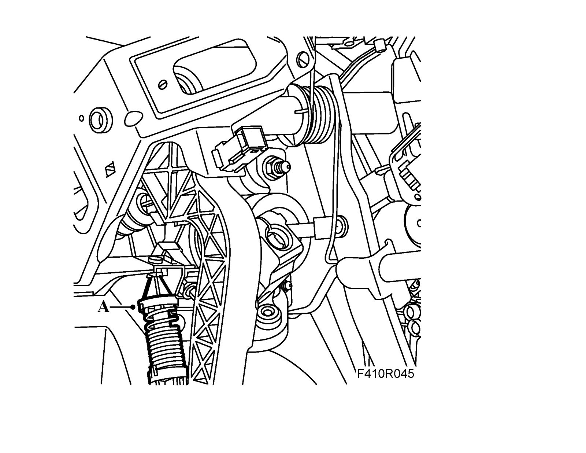

Clutch Pedal Spring
Clutch pedal springTo remove
1. Press the clutch pedal forward.
2. Remove (lift off) the clutch spring from the clutch pedal (A).

To fit
1. Move the clutch pedal spring up and position it in the clip (A).

2. Move the clutch pedal forward and hook the clutch pedal spring into place.